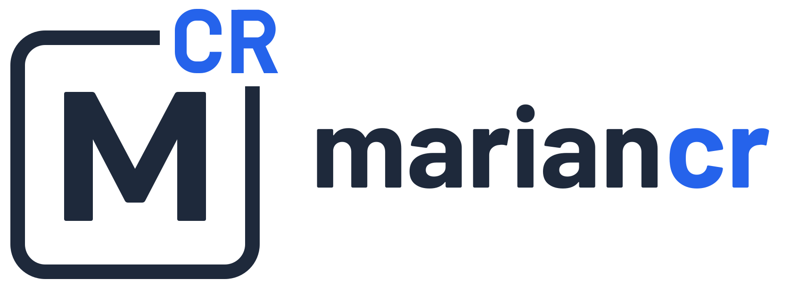
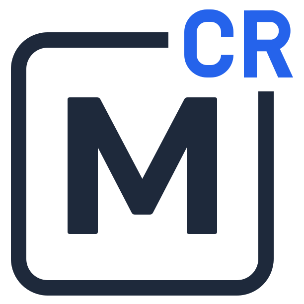
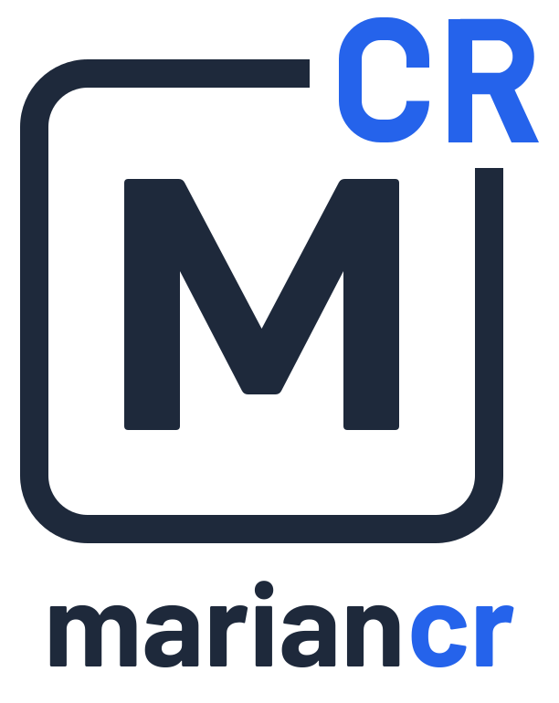
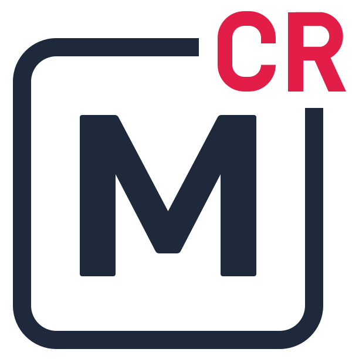
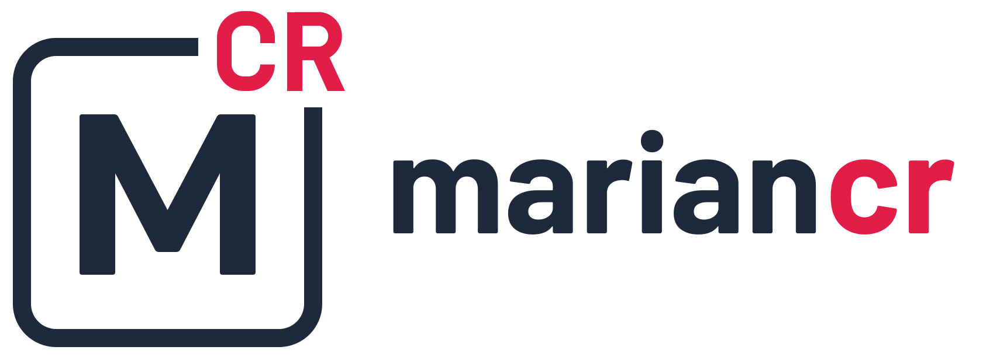

La marca
Aspecto de libro de texto maquetado por un profesional: fondo blanco, mucho aire, tipografía cuidada y un único color por curso.

Logotipo
Una casilla de elemento químico. La M es el símbolo y «CR» sale por la esquina superior derecha, rompiendo el marco. Las letras están dibujadas: no se reescriben con una fuente.
Versiones


Un logotipo por curso
Sobre fondos
Área de respeto y tamaño mínimo
Alrededor del logo, como mínimo, la altura de la CR.
Tamaño mínimo: símbolo 16 px / 6 mm; horizontal 28 px / 10 mm de alto.
Construcción
Marco redondeado, abierto en la esquina superior derecha, con un grosor del 5 % del ancho. M ancha con V central profunda. CR estrecha, de estilo DIN, que sobresale del marco con un hueco igual al trazo.
M y marco siempre en tinta; CR en el acento del curso.
Qué no hacer

Color
Cada curso tiene tres tonos: acento para superficies grandes (logo, portada, pestaña, franjas), texto para letras de color y suave para rellenos.
Base
El acento no se usa en texto pequeño: para letras, el tono texto. No pongas General y 1.º Bach uno junto al otro, porque se parecen.
Tipografía
Tres familias gratuitas (OFL). Fraunces da el tono editorial de los materiales; Barlow, el de las herramientas y las etiquetas.
Jerarquía
En una reacción química la masa se conserva: el número de átomos de cada elemento es el mismo en reactivos y productos. Por eso 2 H₂ + O₂ → 2 H₂O.
Tramas
Cada curso tiene su papel de cuaderno. La trama acompaña al color y mantiene la identificación cuando se imprime en blanco y negro.
Aplicaciones
El mismo sistema en papel, en el proyector y en la pantalla.
Portada de tema

2.º Bach · QuímicaQuímica del carbonoPresentación 16:9
Caja en los apuntes
Webs y herramientas
Tono y ortotipografía
Claro, cercano y riguroso. Se tutea al alumnado y se escribe como en un buen libro de texto.
2bach-quim-t01-apuntes.pdfRecursos
Todo lo necesario para aplicar la marca. Los logotipos son SVG vectoriales con fondo transparente.


Usar la marca en una web
<link rel="stylesheet" href="https://mariancr-marca.vercel.app/mariancr.css"> <link rel="icon" href="https://mariancr-marca.vercel.app/logo/simbolo/mcr_general.svg"> <body class="mcr mcr-app curso-general"> <!-- curso-1eso | 2eso | 4eso | 1bach | 2bach -->
Al cambiar la hoja, todas las webs que la enlazan se actualizan solas: Clase en directo y Exámenes tipo test.